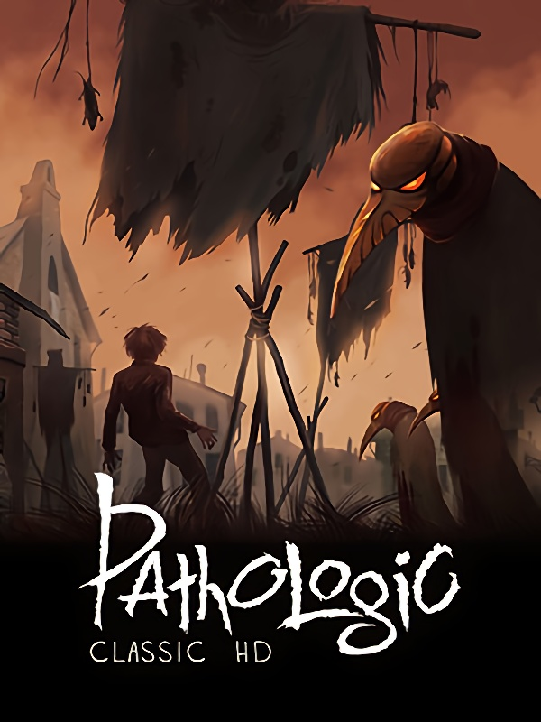

Pathologic Classic HD
Pathologic Classic HD
Details
|  | |
| Playtime | 4h 51m 0s |
| Last Activity | 09/08/2020 9:12:30 |
| Added | 05/08/2018 |
| Modified | Never |
| Completion Status | Not Played |
| Source | Steam |
| Platform | PC |
| Release Date | 29/10/2015 |
| Community Score | 83 |
| Critic Score | 76 |
| User Score | |
| Genre | Action Adventure Indie RPG |
| Developer | General Arcade Ice-Pick Lodge |
| Publisher | Good Shepherd Entertainment |
| Feature | Achievements Cloud saves Full Controller Support Nexus Mods Single Player Trading Cards |
| Links | Nexus Mods PCGamingWiki Community Hub Discussions Guides Achievements Store Page News |
Description

The original Indie Cult Classic returns fully restored, and more evocative than ever.
Pathologic Classic HD is the Definitive Edition of the original Cult Classic Psychological First-Person Survival game. The game represents a unique and unforgettable experience as it transports players in a weird town which crouches, ominous, in the far reaches of an ancient steppe. It was once a small drover settlement, huddled around a monstrous abattoir—but something about the butchery it was near has changed it. It has developed an odd social structure over the course of several generations. It could have quietly continued along its weird way, but a sudden outbreak of an unknown and inevitably lethal disease has decimated the citizens. Prayers did not help. Science did not help. So, finally, they have turned to outsiders for help: three of them enter the town in hope of finding a cure or—failing that—an explanation. The first outsider was a ruthless investigator, assigned by local authorities. The second is a far-sighted Ripper who has used his extraordinary abilities to gain a reputation as an ingenious surgeon, who has come to the town in search of his father's terrible heritage. The third—and last—outsider is an eccentric girl rumored to have mystic healing abilities; she may become the town's salvation were it not for the constant fear that plagues her, the memory of the horrors of her recent past.
On the surface, Pathologic is a first person horror adventure game where you control one of three "heroes." Dig deeper, however, and you’ll find an experience that will affect your emotional and psychological state. In the world of Pathologic you’ll find yourself in situations where morals and good deeds are meaningless in the face of raw despair and endless need. Talk to the denizens of the town and decide for yourself if you wish to ease someone else’s pain or save every bit of precious medicine to protect yourself from the invisible and inexorable plague. Become witness to the miasma of horror as the plague begins to overcome the town.

- Brand New in-house English script: For the first time ever, the game has cast off the major issue that had previously disallowed international audiences from accessing it.
- Brand New Voice-overs.
- New content: A certain amount of text that had previously been cut from the international version of the game have now been restored
- Updated textures and higher resolutions support.
- New visual effects.
- Newly Included Fan-Made Polish translation: thanks to the hard work and generosity of Jakub Derdziak & Aldona Derdziak.
- An Italian translation, kindly donated to us by the original translators of the game, Stefano Gaburri and Claudio Todeschini.

- An indie cult classic.
- 12 days in a plague-ridden town. Time is running, and mostly it’s running out; numerous events unfold, whether you’re there to witness them or not.
- 70+ hours of real-time gameplay without grinding or repetitive quests. As time goes by, more and more things happen, inviting you to participate and change the course of events.
- 3 playable characters with 3 unique storylines. The Bachelor’s, the Haruspex’s, and the Changeling’s plots are interconnected, but every side of the trilemma is represented separately via unique events, quests, dialogues, and subplots.
- The plot is critically acclaimed and often regarded as the high point of the game. It’s not just about the fate of the dying town—it’s about an ideological conflict, represented by a multitude of characters and factions, each with their own idea of what life, death, and miracles are.
- An open-world game. While the plot is there to grab you, the town has no artificial boundaries: you are free to explore it from day one, carving out your own story.
- Survival is tough. The dying town demands that you constantly keep an eye on your status, maintaining a full belly and decent immunity. That will require tough choices.
- Communicate, barter, rob, or steal. There are many ways to acquire your bare necessities, each of them with its own benefits and drawbacks.
- The atmosphere of bleakness and despair without cartoonish evil or bad guys. Playtime is over—there will be no jump scares or simple solutions. You will have to do it the hard way.
- An indie cult classic.